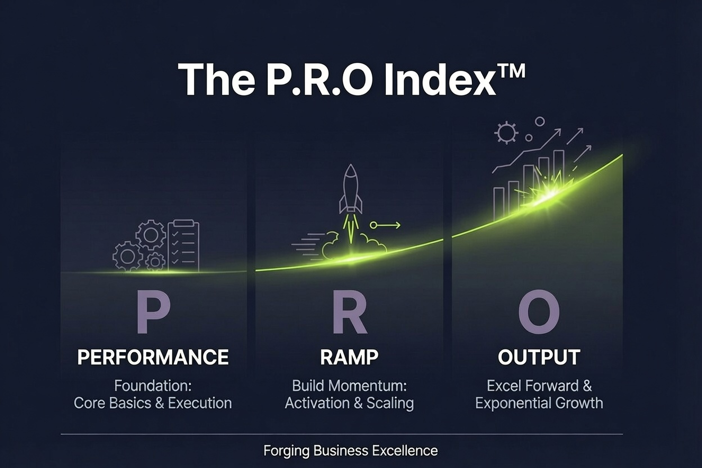

Driving Operational Efficiency and Commercial Growth for B2B and Field Services.

Industrial Marketing Isn’t Creative. It’s Structural.
FieldForge Partners built the P.R.O.™ framework for technical operations that dominate on-site execution but hit a growth ceiling due to fragmented tracking and leaked leads. We replace generic agency guesswork with engineered marketing infrastructure: data-harvesting, automated routing, and digital systems that turn your technical expertise into predictable revenue.
Built for operations that need to break total dependency on trade shows and word-of-mouth.
The P.R.O.™ Index™
System Status: ActiveP.R.O.™ System Constraints: A lagging index score indicates structural gaps across your Performance, Ramp, or Output layers. These constraints actively drain your field capacity by allowing operational lag and pipeline stalls to dictate where you deploy your mobilized crews.
The Four-Stage Blueprint
Critical Constraint Diagnosis
We bypass generic corporate audits. Instead, we launch the voice-activated P.R.O.™ Index™ to instantly pinpoint the exact pipeline stalls, conversion leaks, and market visibility blind spots holding back your operations.
Market Performance Engineering [P]
We transform your website and sales assets into high-authority commercial tools. By re-engineering your application messaging and digital architecture, we ensure your capabilities pass strict procurement vetting and rank cleanly across AI search environments.
Pipeline Ramp Activation [R]
We deploy precise data harvesting and targeted account-based campaigns to stabilize your monthly opportunity flow. This builds a repeatable inbound system that breaks your total dependency on legacy trade shows and word-of-mouth networks.
Automated Workflow Output [O]
We inject practical automation and CRM logic directly into your front office to eliminate administrative drag. We turn your CRM into a trusted source of truth, deploy intelligent lead routing, and build clear attribution loops to maximize execution speed.
Built From Field Execution. Scaled Through System Logic.
Core Operating Principles
Deliberative & Analytical Strategy
We systematically dig into immediate business constraints to uncover hidden visibility bottlenecks, pipeline risks, and front-office headaches before prescribing a solution. We replace generic consulting guesswork with precision constraint identification.
Practical System Management
Change fails when it ignores human and field realities. We systematically analyze all factors affecting a workflow, leveraging deep, trusted industry relationships to guide teams smoothly through automated system deployment, CRM optimization, and non-disruptive software transitions.
The Achiever Focus
We operate with a relentless work ethic, completely rejecting academic business theories, noisy growth hacks, or corporate fluff. We evaluate performance based strictly on proven engineering methods and predictable, measurable pipeline momentum.
Arranger Alignment
We coordinate and align people, automated software platforms, and hyper-precise data resources into the most productive configuration possible. This architecture synchronizes your inbound and outbound operations to maximize commercial execution and scale revenue.
Founder Wesley Cowley ]
Field Roots, Executive Execution
About the Founder
FieldForge Partners was founded by Wesley Cowley, a Mechanical Engineer with 15 years of hands-on experience across B2B field services, power generation, and complex surface engineering.
- Industrial B2B-Proven Leadership: Wes built his career managing large-scale infrastructure projects and technical teams for some of the largest industrial field service companies in the category, eventually rising to Senior Vice President roles.
- Private Equity Expertise: Having guided leadership teams through aggressive growth and complex transitions under some of America's most prominent private equity firms, he understands the exact pressures business owners face.
Today, Wes acts as a seasoned advisor who translates complex sales, marketing, and operational constraints into clear, execution-ready blueprints. This deep, real-world exposure forms the technical foundation for our proprietary P.R.O.™ Index™ diagnostic framework.
End-to-End Operational & Commercial Engineering
Our Value Proposition:
We build permanent, data-driven revenue engines specifically for the mobilized B2B industrial field service sector. No over-hyped marketing hacks or generic corporate fluff—just clear, proven ROI.
We bypass generic corporate audits. Instead, we launch a proprietary P.R.O.™ Index™ diagnostic to immediately expose pipeline stalls, hidden visibility gaps, and tracking leaks.
- Identifies immediate operational wins before direct consultation.
- Customizes deployment parameters to your exact workforce realities.
Modernized Web Footprints & Messaging
Turning your digital footprint into an active sales filter. High-performance, SEO-optimized layout designs focused on clear technical execution by identifying buyers, equipment applications, and engineering needs.
- Problem-specific messaging mapped by equipment variant
- High-margin technical capability emphasis
Industrial SEO & Answer Engine Optimization
Structuring your technical content so your specialized services are reliably cited and recommended by traditional search engines and next-generation AI discovery platforms like ChatGPT, Gemini, and Perplexity.
- Enterprise Service Schema markup injection
- Non-branded search discoverability for asset problems
Intent Demand Capture & Nurture
Stabilizing your qualified opportunities. We showcase your equipment expertise directly to plant managers and engineers through targeted account campaigns, breaking your dependency on legacy networks.
- Automated trust content & SME video assets
- Predictable account-based nurture channels
Sales & Partner Channel Alignment
Eliminating the visibility dark zones that occur after an inquiry is handed off to sales reps or estimators. We replace guesswork with transparent collateral needed to convert contracts.
- Unified Golden Thread capability statements
- Standardized RFP responses designed for procurement
Conversion Infrastructure & Lead Routing
Upgrading your environment to convert intent into secure data inputs inside enterprise CRMs. When high-value leads hit your stack, systems eliminate manual routing delays and frontend constraints.
- Secure API lead and RFQ tracking links
- Lag-free distribution routing directly to human account managers
Growth Intelligence & CRM Integrity
Turning your CRM into a trusted source of truth to manage the pipeline cleanly. We establish clear attribution loops so leadership can track active opportunities back to their exact campaign origin.
- Bidirectional marketing-to-CRM automation parameters
- Hardcoded full-funnel campaign financial attribution loops
| Infrastructure Layer | Verified Tooling | Engineered Operational Outcome |
|---|---|---|
| Automation & Nurture | HubSpot, ActiveCampaign, Zoho & more | Automated lead tracking and high-volume nurture. |
| Pipeline Fuel | Apollo.io, hunter.io & More | Precision contact lists for industrial decision-makers. |
| CRM Integration | Salesforce, HubSpot, Pardot, SAP & more | Bi-directional sync mapping web visits to revenue. |
| Process Logic | n8n.io, Make.com, Secure APIs & more | Multi-variable automation for hands-off lead routing. |
| Digital Footprint | Webflow, WordPress, HTML & more | Fast, stable sites optimized for AI search crawling. |
Start a Dialogue with “The Professor”
Operational and commercial bottlenecks are diagnosed through direct discussion—not static, repeating discovery scripts.
Why Professor?
Let’s be clear: "The Professor" wasn't earned in some stuffy academic lecture hall or a corporate marketing suite. It goes back to a project around 2015. On that job, the customer, a third-party consultant, and a close friend and colleague of mine started trading lighthearted nicknames to keep things lively on-site. Because of my knack for answering highly specific technical questions using real-world subject matter expertise right there on the spot, they dubbed me "The Professor."
The name stuck with a few folks ever since, and it perfectly sets the tone for how we work today: bringing sharp, deep technical logic to your business operations without taking ourselves too seriously.
Connect with
"The Professor"
Let's get in touch.
PERFORMANCE RAMP OUTPUT
Typical metrics fail because they treat your business like isolated silos. The P.R.O.™ Index™ tracks the systemic domino effect stalling your revenue:
- Performance: Generic positioning causes you to fail procurement vetting.
- Ramp: Front-office tracking leaks freeze your pipeline velocity.
- Output: Administrative lag ultimately drops your field crew utilization.
To map these exact intersections, you will evaluate 3 interconnected constraints at a time across consecutive architectural phases.